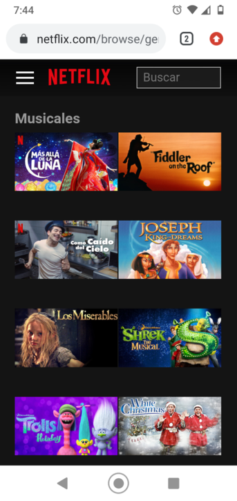
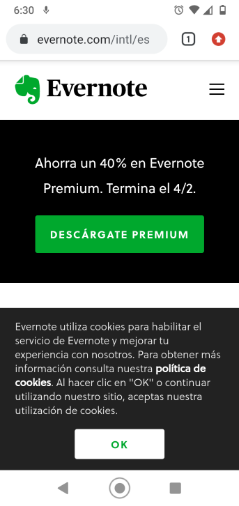

PARC: Alignment
Netflix
netflix.com
The Netflix mobile page is a great example of using a near perfect alignment of movie images available for viewing.
Fitt's Law
Evernote
evernote.com
Fitts law is a predictive model that determines the amount of time it takes for a specific user to move their mouse or cursor to a target area on a website. The button of unload is clearly identified an to the reach of the finger.
White Space
Most designers will point you to the lesson of Google in implementing macro white space. Its iconic homepage is vastly simple, ridding the user of any distraction so it’s easier to focus on why the user is there in the first place: to do some searching.